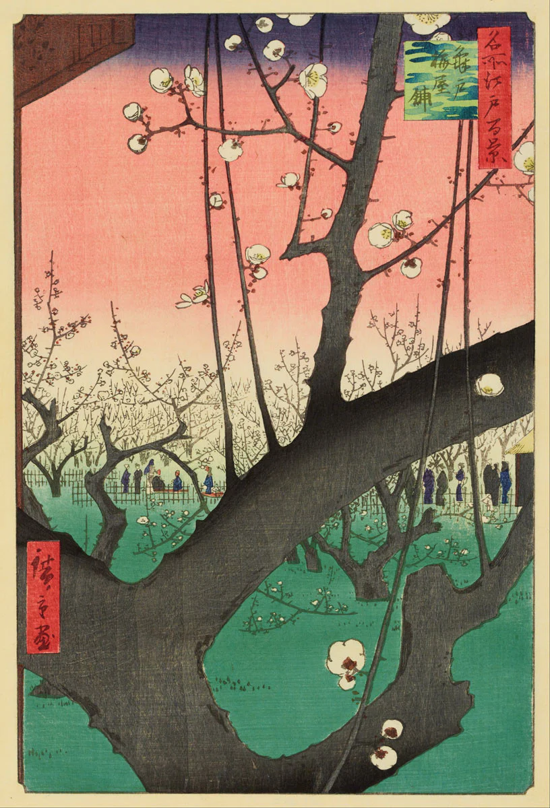
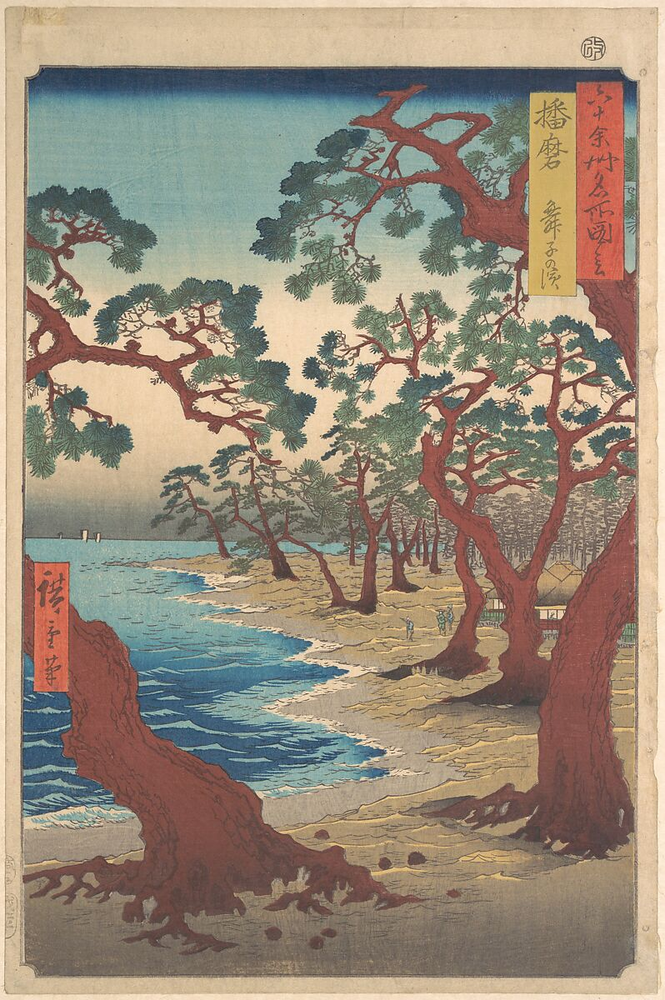
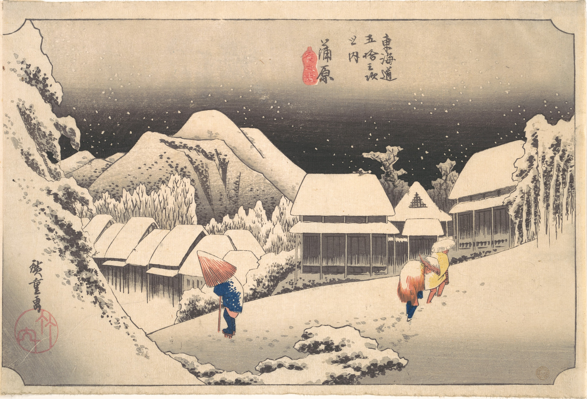
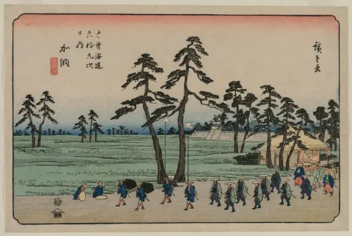
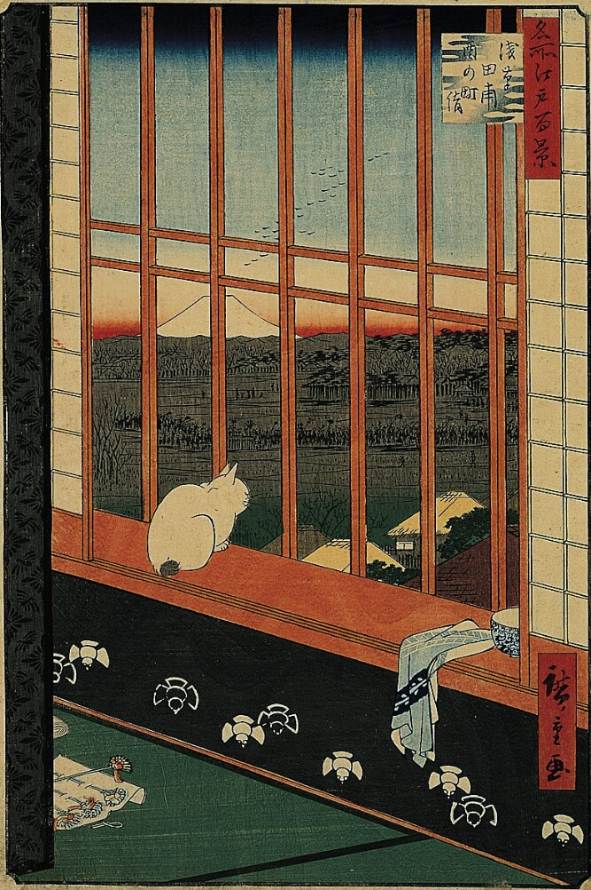

~ utagawa hiroshige ~

Plum Garden at Kameido, 1857

Maiko Beach in Harima Province, 1853

A Snowy Evening at Kambara Station, 1834

Kano on the Kisokaido, 1837

Asakusa Ricefields and Torinomachi Festival, 1857
 Lake in the Hakone Mountains, 1852
Lake in the Hakone Mountains, 1852